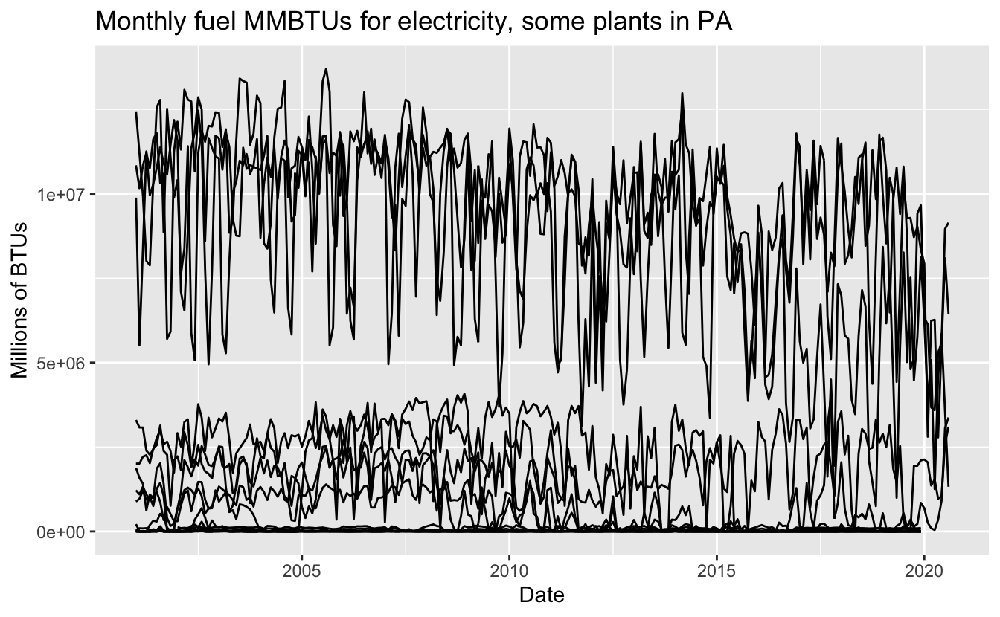
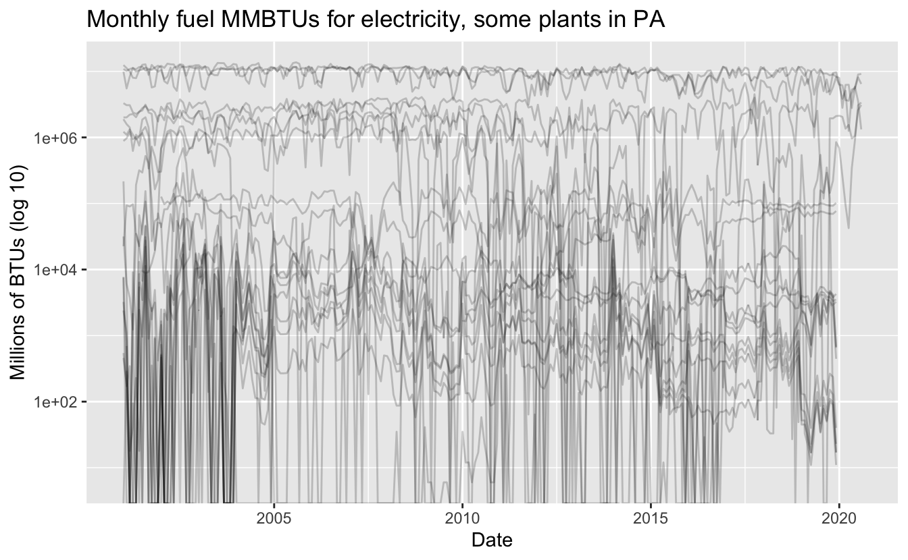
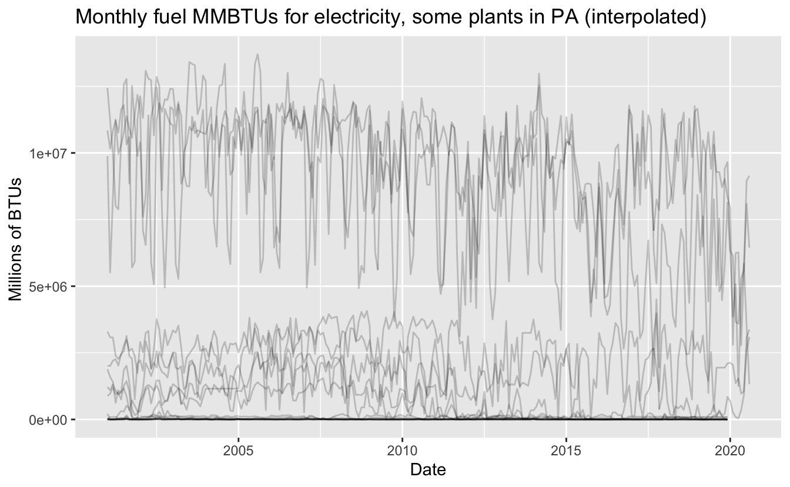
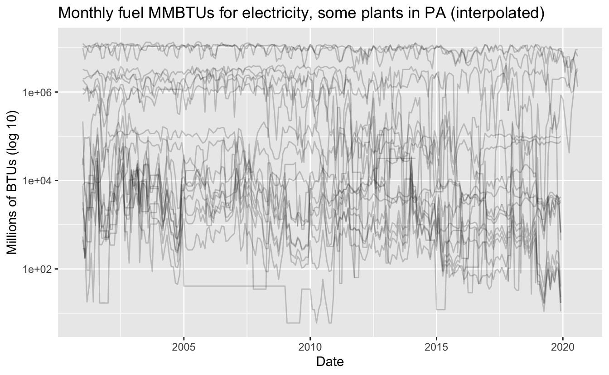
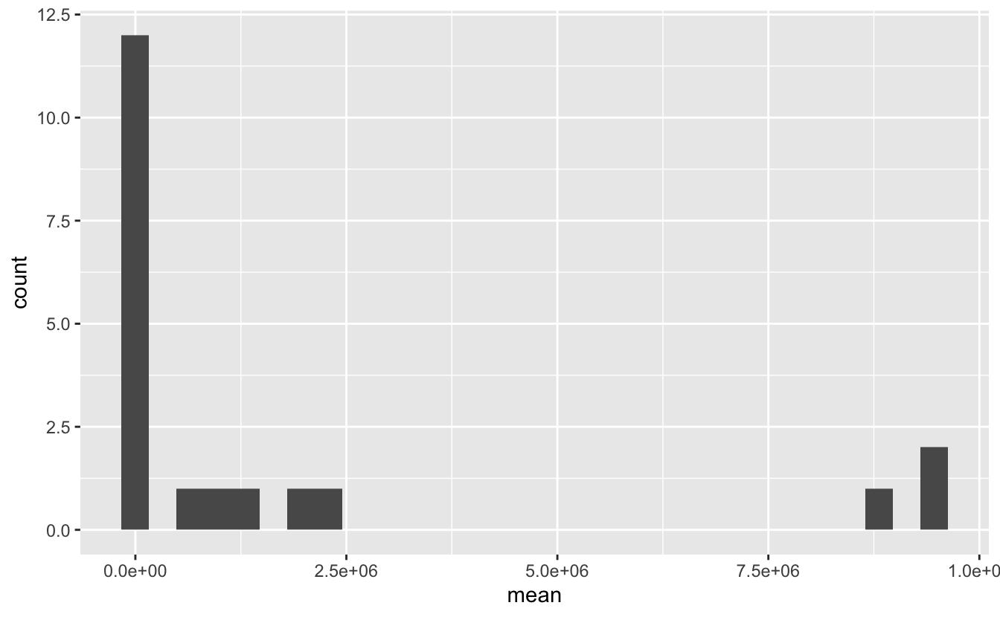
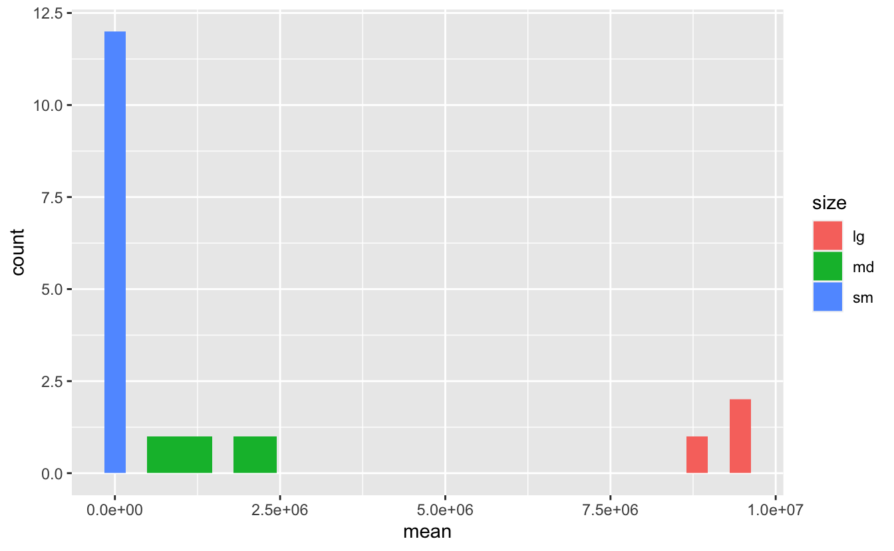
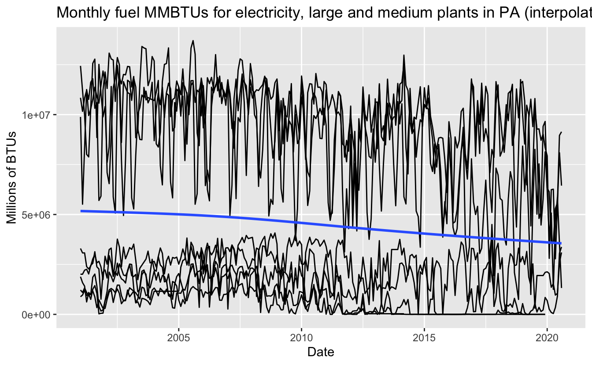
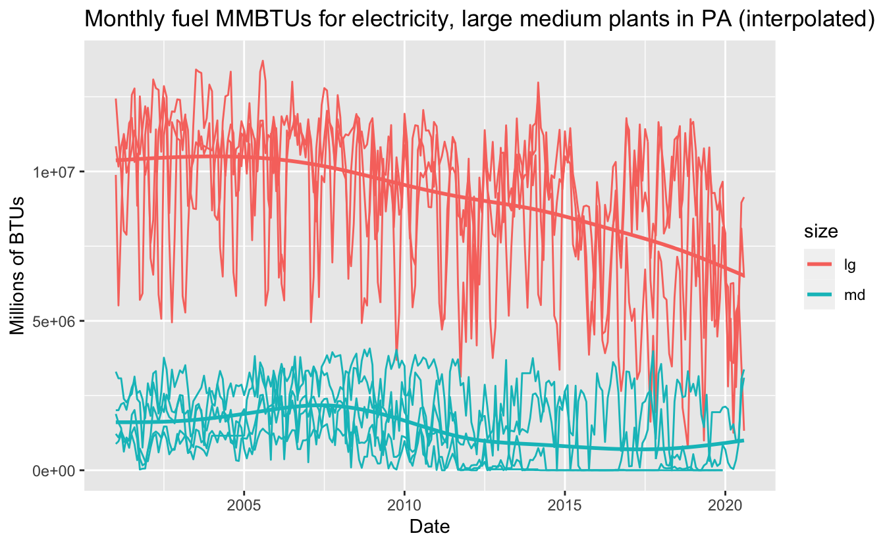

old West Penn power plant near Pittsburgh
Fossil fuels at electricity plants
Today I am going to prepare a couple of sample time series data sets for an upcoming project and do some preliminary exploratory data analysis. In the next post, I’ll do a bit of time series modeling in order analyze the trends in the data set. In some future post, I will walk through developing a more sophisticated model and use it to answer some more specific questions.
I went to school in Pittsburgh, and I recently saw this story about the governor’s plan to cap-and-trade carbon emissions from power plants. How will this effect production in the region? How many carbon-emission could this avert? How have carbon emissions from power plants changed over time? Fortunately, the Energy Information Administration (EIA) provides a public API and rOpenSci maintains a nice wrapper in R, so we can start to answer these questions.
library(tidyverse)
library(glue)
library(eia)
# set with usethis::edit_r_environ("project")
eia_set_key(Sys.getenv("EIA_API"))APIs and the R Ecosystem
First, a shoutout! I have found that R ecosystem has very well-maintain packages for interacting with government data APIs–for instance, tidycensus for US Census data, cancensus for Canadian Census data, and eia for the Energy Information Agency data. Having a well-designed API wrapper for sifting through public datasets is yeoman’s work and deeply appreciated. All of these implement an interface using tidyverse concepts, like returning the data and the directory structure as tibbles (a variant of a dataframe). Hadley Wickham has a line somewhere that the tidyverse tries to solve the most common analysis bottlenecks, which are more analyst-centered than compute-centered. This is nowhere more true than when working with new APIs, so using API wrappers with tidyverse concepts is a huge help.
Basic EDA
Here I adapt Hadley Wickham’s on exploratory data analysis. We start by noting some irregularities in the data.
tidy_aa_data %>%
count(year) %>%
head()
#> # A tibble: 6 x 2
#> year n
#> <int> <int>
#> 1 2001 227
#> 2 2002 240
#> 3 2003 226
#> 4 2004 240
#> 5 2005 228
#> 6 2006 216
tidy_aa_data %>%
count(name_plt) %>%
head()
#> # A tibble: 6 x 2
#> name_plt n
#> <chr> <int>
#> 1 Blossburg 227
#> 2 Brunot Island 225
#> 3 Conemaugh 235
#> 4 Elrama Power Plant 157
#> 5 Hamilton 228
#> 6 Homer City Generating Station 236
tidy_aa_data %>%
count(name_plt) %>%
count(n) %>%
head()
#> Storing counts in `nn`, as `n` already present in input
#> ℹ Use `name = "new_name"` to pick a new name.
#> # A tibble: 6 x 2
#> n nn
#> <int> <int>
#> 1 47 1
#> 2 157 1
#> 3 204 1
#> 4 216 1
#> 5 225 1
#> 6 226 1So across plants for the same time period, we have different numbers of data points. How are these recorded? Are these NAs, zeros, or something else?
tidy_aa_data %>%
group_by(name_plt) %>%
count(nas = sum(is.na(value))) %>%
head()
#> # A tibble: 6 x 3
#> # Groups: name_plt [6]
#> name_plt nas n
#> <chr> <int> <int>
#> 1 Blossburg 0 227
#> 2 Brunot Island 0 225
#> 3 Conemaugh 0 235
#> 4 Elrama Power Plant 0 157
#> 5 Hamilton 0 228
#> 6 Homer City Generating Station 0 236
tidy_aa_data %>%
group_by(name_plt) %>%
summarise(mean = mean(value), zeros = sum(value == 0)) %>%
arrange(desc(mean)) %>%
head()
#> `summarise()` ungrouping output (override with `.groups` argument)
#> # A tibble: 6 x 3
#> name_plt mean zeros
#> <chr> <dbl> <int>
#> 1 Keystone 9463596. 0
#> 2 Conemaugh 9407419. 0
#> 3 Homer City Generating Station 8686103. 0
#> 4 Seward 2108629. 18
#> 5 Shawville 1886518. 9
#> 6 Elrama Power Plant 1228973. 23It seems for each plant NAs aren’t used, and zeros are used from often to never. Since this is administrative survey data, there’s a good chance that 0 values are non-report values. Where do these show up?
plants <- tidy_aa_data %>%
mutate(my_date = year + (month - 1) / 12)
plants %>% ggplot(aes(my_date, value), alpha = 2/10) +
geom_line(aes(group = name_plt)) +
labs(x = "Date",
y = "Millions of BTUs",
title = "Monthly fuel MMBTUs for electricity, some plants in PA")
plants %>% ggplot(aes(my_date, value)) +
geom_line(aes(group = name_plt), alpha = 2/10) +
scale_y_log10() +
labs(x = "Date",
y = "Millions of BTUs (log 10)",
title = "Monthly fuel MMBTUs for electricity, some plants in PA")
#> Warning: Transformation introduced infinite values in continuous y-axis
In the log-scaled plot above, these show up as spiked vertical lines. We could interpolate these as missing values by using tidyr::fill() to add the previous value as the missing value. This should be relatively robust assuming that we have no long sequences of zeros. Do we?
plants %>%
mutate(is_zero = (value == 0)) %>%
group_by(name_plt,
grp = with(rle(is_zero),
rep(seq_along(lengths), lengths))) %>%
mutate(Counter = seq_along(grp)) %>%
ungroup() %>%
select(-grp) %>%
filter(value == 0) %>%
count(Counter)
#> # A tibble: 24 x 2
#> Counter n
#> <int> <int>
#> 1 1 141
#> 2 2 60
#> 3 3 36
#> 4 4 19
#> 5 5 5
#> 6 6 5
#> 7 7 3
#> 8 8 3
#> 9 9 3
#> 10 10 3
#> # … with 14 more rowsThere are probably more elegant ways of doing this, but from this count we can see that only five times was zero reported for more than five months, and once for 24 months. If this were a high-stakes analysis, we’d like to know why those zeros are there. For now, we will just interpolate.
# interpolate
plants <- plants %>%
mutate(value = na_if(value, 0)) %>%
fill(value)
# interpolated
plants %>%
ggplot(aes(my_date, value)) +
geom_line(aes(group = name_plt), alpha = 2/10) +
labs(x = "Date",
y = "Millions of BTUs ",
title = "Monthly fuel MMBTUs for electricity, some plants in PA (interpolated)")
# interpolated scaled
plants %>%
ggplot(aes(my_date, value)) +
geom_line(aes(group = name_plt), alpha = 2/10) +
scale_y_log10() +
labs(x = "Date",
y = "Millions of BTUs (log 10)",
title = "Monthly fuel MMBTUs for electricity, some plants in PA (interpolated)")
We see that most of the consecutive zeros are in the smaller plants. Since there seems to be three bands of interest, for now, let’s focus on the bigger plants by filtering out the smallest band that is crowded at the bottom.
Focus
plants_means <- plants %>%
group_by(name_plt) %>%
summarise(mean = mean(value)) %>%
arrange(desc(mean))
#> `summarise()` ungrouping output (override with `.groups` argument)
ggplot(plants_means, aes(x = mean)) +
geom_histogram()
#> `stat_bin()` using `bins = 30`. Pick better value with `binwidth`.
We want to remove that tall bar.
plants_means <- plants_means %>%
mutate(size = ifelse(mean < 5e5, "sm", ifelse(mean < 5e6, "md", "lg")))
plants_means %>%
ggplot(aes(x = mean, fill = size)) +
geom_histogram()
#> `stat_bin()` using `bins = 30`. Pick better value with `binwidth`.
plants_big <- plants %>%
right_join(plants_means %>% filter(size == 'md' | size == 'lg'))
#> Joining, by = "name_plt"Now that we have a just two groups, let’s take another look at the line plot. We could fit a kernel smoothing function to the whole data set, but it makes sense to fit one to each band. In the next post, we can see if the trend line changes in more informative of the underlying signal if we do some modeling.
plants_big %>% ggplot(aes(my_date, value)) +
geom_line(aes(group = name_plt)) +
geom_smooth(se = FALSE) +
labs(x = "Date",
y = "Millions of BTUs",
title = "Monthly fuel MMBTUs for electricity, large and medium plants in PA (interpolated)")
#> `geom_smooth()` using method = 'gam' and formula 'y ~ s(x, bs = "cs")'
plants_big %>% ggplot(aes(my_date, value, color = size)) +
geom_line(aes(group = name_plt)) +
geom_smooth(se = FALSE) +
labs(x = "Date",
y = "Millions of BTUs",
title = "Monthly fuel MMBTUs for electricity, large medium plants in PA (interpolated)")
#> `geom_smooth()` using method = 'gam' and formula 'y ~ s(x, bs = "cs")'
So we’ve explored the coverage of our data, selected a portion to focus on, fixed what we think is missing data, and set up some clusters. We’ll save our progress for today and pick it up with modeling next time.
write_csv(plants_big, file = "samp_pa_elec_cons_plants_big.csv")